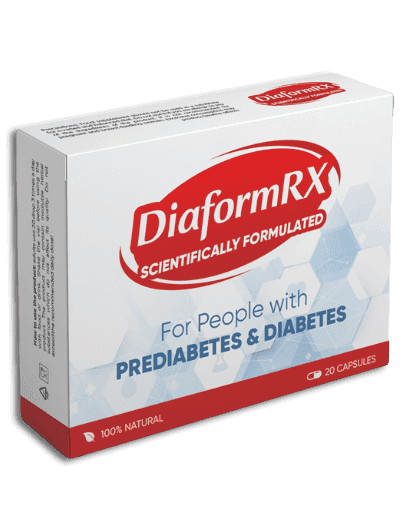
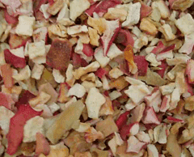

Diaform RX - lo mejor de la naturaleza para TI

¡Deje sus datos aquí y nos pondremos en contacto con usted!
ESTE "ASESINO" SILENCIOSO ESTÁ AL ACECHO DE TODOS ...
PUEDES AYUDARTE A TI MISMO Y A TU FAMILIA EN LA PREVENCIÓN Y CONTROL DE LA DIABETES
Con tecnologías de extracción de última generación que retienen los principios activos clave para la diabetes y la eliminación del exceso de sustancias, Diaform RX tiene una acción más rápida y mejor. Se realizaron ensayos clínicos del té Diaform RX en 5.000 pacientes en diversas etapas de la diabetes durante 40 días.
Ninguna preparación es tan eficaz.
Efecto positivo en la diabetes
Mejoras significativas

"Diaform RX proporciona un efecto natural excelente para ayudar a controlar la diabetes. Después de un tiempo, la preparación natural ayudará a controlar mejor la diabetes, se restaurarán algunas funciones corporales y también ayudará a mejorar los trastornos metabólicos.
Recientemente presenté Diaform RX a varios usuarios de medicina alternativa y recibí muy buenas críticas sobre su efectividad ".
(Juan Jose De Mora Sanchez, MEDICINA ALTERNATIVA Y FARMACIAS HERBALES)
"Estoy agradecido por este producto. He tenido problemas para tomar medicamentos en el pasado y, muchas veces, dejé de tomarlos. Pero después de probar Diaform RX, la fatiga y la somnolencia desaparecieron, mis niveles de azúcar en sangre volvieron a la normalidad, incluso olvidé de estarlo midiendo. Me siento más fuerte y soy el hombre que era nuevamente ".
"Mi esposo y yo tenemos 55 años y hemos tenido diabetes tipo 2 durante 5 años. Hemos usado varios medicamentos, pero en vano. Muchas veces hemos sentido frustración y depresión. Afortunadamente, descubrimos Diaform RX y decidimos probar. Mi esposo es cabal, siguió estrictamente las instrucciones. Después de unos días, se interesó más en el sexo (perdóneme por hablar sobre este tema delicado, pero esto no ha sucedido en más de seis meses). y mantener una condición regular.
El resultado: justo después de la cena, mi nivel de azúcar en la sangre bajó a 6. ¡Nuestra vida íntima ha mejorado y el deseo sexual de mi esposo es mucho más apasionado! "
"Tuve diabetes tipo 2 durante muchos años. Mi nivel de azúcar en sangre seguía subiendo. Estaba muy preocupada y siempre a dieta, iba al médico con regularidad, pero nada cambió. Por ejemplo: en un día las valores de azúcar variaron de 3,2 a 11. Pero mi tía me habló de Diaform RX y me recomendó que lo tomara dos veces al día. Sentí los cambios rápidamente: mi nivel de azúcar en sangre comenzó a cambiar en una proporción de 5-8 y mi cuerpo estaba funcionando normalmente. El producto me devolvió la alegría de vivir ".
OBTENGA YA NUESTRO PRODUCTO Y AYUDE A CONTROLAR LA DIABETES DE USTED Y SUS SERES QUERIDOS
SOLO POR 39 €Ingresa aquí tu información de contacto y te llamamos!